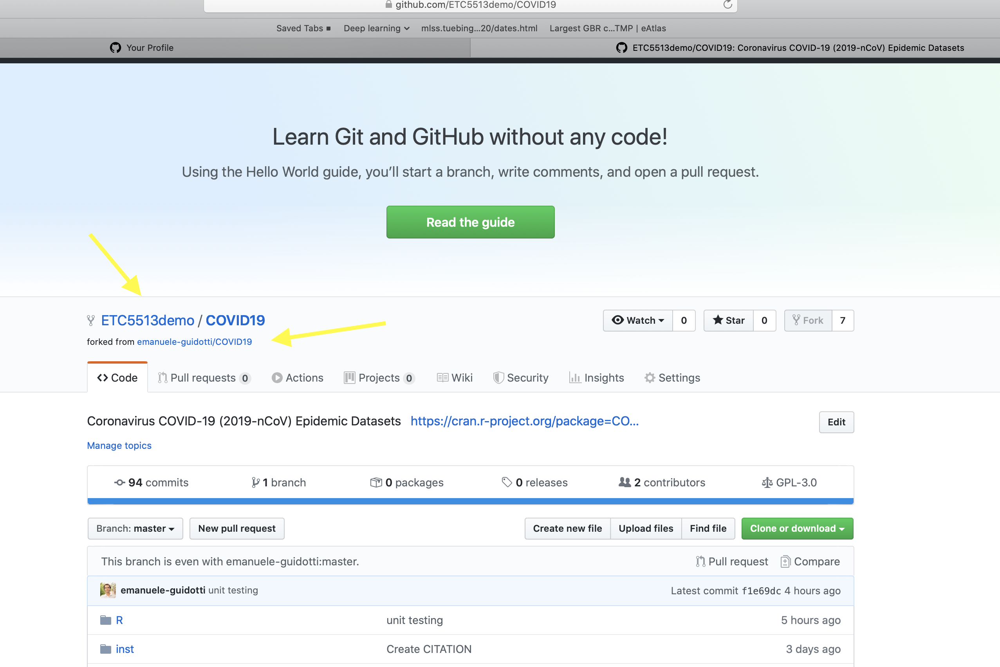
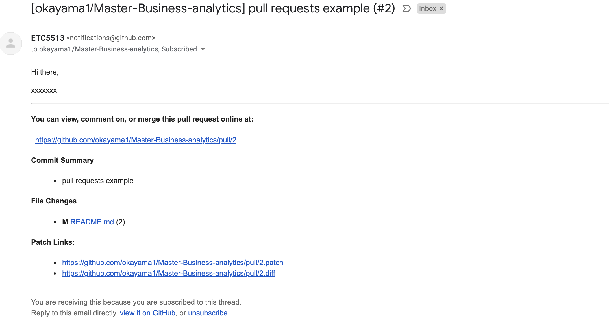
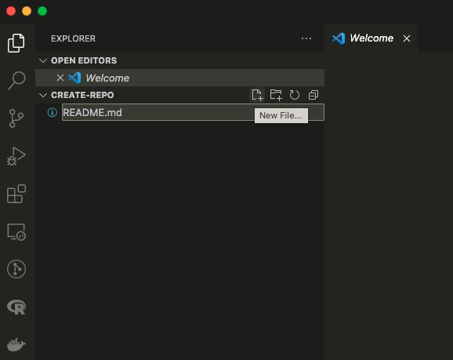
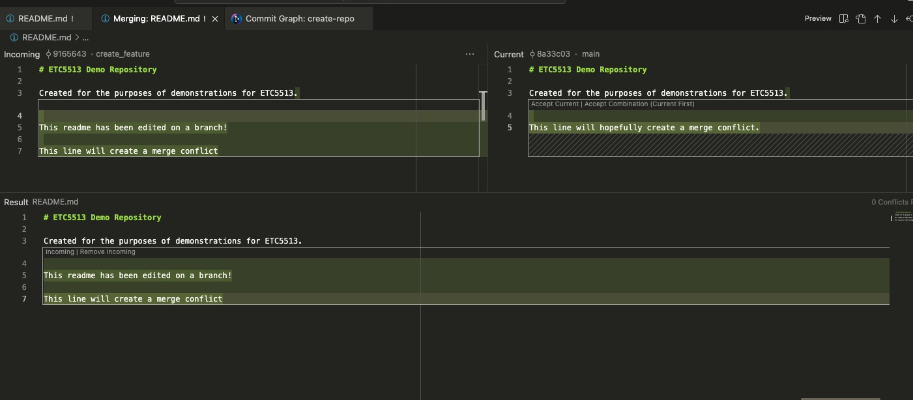

ETC5513: Reproducible and Collaborative Practices
Deeper git knowledge, stashing and tools
Lecturer: Michael Lydeamore
Department of Econometrics and Business Statistics
Open Frame

Recap
- Learned more on creating reproducible reports:
- Referencing
- Talk about css files
- More on Git:
- Branches
- Solving Git merging conflicts
- Install VSCode as a GUI to work with Git/GitHub and as a text editor for commits.
Today’s plan
Aim
- More Git/GitHub tools
- Pull requests: a tool to collaborate with others via GitHub
- VSCode
With this you have learned the basics to create reproducible and collaborative reports.
Stashing
“Stashing takes the”dirty” state of your working directory - that is, your modified tracked files and staged changes - and saves it on a stack of unfinished changes that you can reapply at any time (even on a different branch).” Source
git stash comes in handy for staged files or `git stash -u for unstaged files.
git stash allow us to keep changes in our local repository and to commit then later on.
git stash save "Message" allow us to add a message to the stash
git stash
Creating a stash allows you to revert but save changes that you might have done in the repository, without losing them.
Then, when you are ready to include those changes and to commit them into the remote repo we can use:
git stash applymakes your changes in the stash on the branch but keeps them in the stash.git stash popmakes your changes in the stash on the branch and removes them from the stash.
Generally, pop is preferred unless you have to apply your changes more than once.
git stash in practice
$ git status
On branch master
Changes to be committed:
new file: style.css
Changes not staged for commit:
modified: index.html$ git stash
Saved working directory and index state WIP on master:
5002d47 our new homepage
HEAD is now at 5002d47 our new homepagegit status changes after stashing
$ git status
On branch master
nothing to commit, working tree cleanWhile your changes are stashed you can …
- Make more changes into the repo, create new commits, switch branches and perform any other Git operations.
- You can come back to your stash later on and re-apply your stash when you’re ready.
- Stash is local to your repository.
Important
stashes are not transferred to the server when you push.
You can create more than one stash: be careful with this.
git apply and git pop: stage changes
The git stash command takes your uncommitted changes but staged and saves them away for later use, or git stash -u if we have not staged the changes, and then reverts them from your working copy. git stash save “Message to remember what you did”
To bring stash in from the repo:
git stash applygit stash pop
git stash apply
git stash apply will take the changes saved in your stash and apply them into the working directory of your current branch. In addition, the changes are kept in the stash. This might be useful when you want to apply the same changes into different branches.
git stash pop
git stash pop will do the same as apply but will delete the stash after applying the changes.
Important
The stash is not a replacement for a commit. You can think of stashing as ‘keeping for later’, while a commit is for saving and keeping record.
git stash pop in practice
$ git status
On branch master
nothing to commit, working tree clean$ git stash pop
On branch master
Changes to be committed:
new file: style.css
Changes not staged for commit:
modified: index.html
Dropped refs/stash@{0} (32b3aa1d185dfe6d57b3c3cc3)git stash apply in practice
git stash apply
On branch master
Changes to be committed:
new file: style.css
Changes not staged for commit:
modified: index.htmlDo you see the difference between pop and apply?
More than one stash
git stash list will list all of your stashes
$ git stash list
stash@{0}: WIP on dev: 1f6f8bb Commit message A
stash@{1}: WIP on master: 50cf63b Commit message Bgit stash show stash@{1}will show you the files changed instash@{1}- Then you can call
git stash apply/poptwice - Or
git stash apply stash@{0} - Or
git stash pop stash@{1}
Deleting stash
git stash drop stash@{0}will deletestash@{0}git stash clearwill remove all the stashes in the stash area.
Important
Because stashes aren’t synchronised, once they’re gone they’re gone. So, clear with caution.
Creating a branch from a stash
If you stash some work, leave it there for a while, and continue on the branch from which you stashed the work, you may have a problem reapplying the work. If the apply tries to modify a file that you’ve since modified, you’ll get a merge conflict and will have to try to resolve it.
If you want an easier way to test the stashed changes again, you can run git stash branch branchname, which creates a new branch for you with your selected branch name, checks out the commit you were on when you stashed your work, reapplies your work there, and then drops the stash if it applies successfully.
Tracked, untracked and ignored files
Git sees every file in your working copy as one of three things:
- tracked: a file which has been previously staged or committed
- untracked: a file which has not been staged or committed or
- ignored: a file which Git has been explicitly told to ignore.
Typically in a project there might be files that we decided to not track and ignore.
Examples include files that are built artifacts and machine generated files that can be derived from your repository source or should otherwise not be committed.
In Rstudio
- Blue-M: a file that is already under version control that has been modified.
- Orange-?: a file that is not under version control (yet…).
- Green-A: a file that was not under version control, but which has been staged to be committed
- Red-D: a file under version control has been deleted. To make it really disappear, you have to staged its disappearance and commit.
- Purple-R: a file that was renamed. (Note that git in Rstudio seems to be figuring this out on its own.)
.gitignore
Ignored files are tracked in a special file named .gitignore that is checked in at the root of your repository.
- There is no explicit
git ignorecommand: instead Git uses a.gitignorefile which must be edited and committed by hand when you have new files that you wish to ignore. .gitignorefiles contain special patterns which are comapred against filenames to determine whether or not they should be ignored.
Example of gitignore patterns

.gitignore file
- You can use the characters as those in the table
- You can also add comments inside your file using .green[#]
# ignore all logs
*.log
# History files
.Rhistory
.Rapp.history
# Session Data files
.RData
# User-specific files
.Ruserdata
# Example code in package build process
*-Ex.RExample of a gitignore file

Creating a gitignore file
From the command line you can create a .gitignore file for your repository.
touch .gitignore
You can edit the file using Rstudio or VSCode.
You can also create a .gitignore file from GitHub.
You can edit it later using RStudio or VSCode.

Creating a .gitignore file
If you want to ignore a file that is already checked in, you have to untrack it before you add it to the .gitignore.
Do to this, from your terminal/Git Bash Shell:
$ git rm --cached FILENAME
The gitignore file specifies intentionally untracked files to ignore.
Each line in a gitignore file specifies a pattern.
Example of a gitignore file
Your branch is ahead of ‘origin/master’ by 1 commits
- This message means that your local repository has one commit that hasn’t been pushed yet.
- If you push without committing, nothing gets pushed.
- If you commit without adding, nothing gets committed.
- If you add without committing, nothing at all happens, git merely remembers that the changes you added should be considered for the following commit.
Tip
git add and git commit are local operations.
git push, git pull, and git fetch are operations that interact with a remote repository.
Why do we fork a repository?
A fork is a copy of a repository.
- Forking a repository allows you to freely experiment with changes without affecting the original project.
- Most commonly, forks are used to either propose changes to someone else project or to use someone else project as a starting point for your own project.0
Forking a repo in GitHub
Search/navigate repo from within our Github account.

Forked repo
Our repos in GitHub

Differences between forking and cloning a repo
- A fork is a copy of someone else GitHub repository, saved to your own GitHub. It allows you to experiment with changes without affecting the original project.
- A fork acts as a bridge between the original repository and your personal one.
- It will also allow you to interact between your forked copy and the original repo.
- When you clone a GitHub repository, you are creating a local copy of that repo on your computer.
- That allows you to work on that repo locally and sync between both your local repo and your remote repo, but you cannot interact with the original repo if it’s owned by someone else.
What is a Pull request?
- We use GitHub to share our code and projects with others.
- There are situations when another person makes changes into your code and wants you to consider those changes, for example fixing a bug or adding new examples
To do this, the other person can make a pull request. This makes a request to the repositories owner to pull or merge these changes into the original repository.
Pull request visually

Forked repo

Modified forked repo for pull request

Create a pull request to the original repo

What happens when you start a pull request

Pull request from ETC5513demo to okayama1

Pull request to okayama1 (owner of original repo)

Pull request email to okayama1
Pull request okayama1 GitHub Inbox

Pull request okayama1 GitHub request received

VSCode
- VSCode is a powerful IDE that works across many different languages.
- It also has excellent Git integration so we can track and create repos, branches, stage, commit and push files.
- Make sure you log into VSCode using your GitHub account.
Opening VSCode

Editing the README.md file
Staged the changes README.md file

Commit the changes README.md file

Visualizing all the files

Creating new branch

In the meantime in GitHub

Resolving conflicts

Resolving conflicts

Resolving conflicts
Resolving conflicts

Before the tutorial
Please make sure you have R and Rstudio locally installed
Please make sure that your GitHub is connected to VSCode and VSCode is installed.
What you should know by now?
- Crate reproducible simple html reports.
- Create figures and tables using R code chunks
- Reference figures, tables and sections
- Connect your reproducible reports to Git and GitHub (version control)
- Work on a reproducible project using Rstudio, Git and GitHub
- Create and merge branches
- Being able to solve merging conflicts
- Forking repos in GitHub
- Interact with others using pull requests on GitHub
- Basic operations with VSCode.
We have the scaffolding ready for collaborative and reproducible reporting
We are now set to start using this tools and create collaborative and reproducible reports! From now on we will learn more on creating beautiful and reproducible reports!
Tutorial and Next Lecture
Next week we will discuss the importance of reproducible reporting and the usage of version control systems. We will do few hands on exercises so please make sure you bring your computer to the lecture.
- Tutorial this week you will start working in pairs.
- You will continue working in pairs in Week 6 too.
- In Week 6, we’ll keep of practicing all the things that we have learned so far.
- This week and next will provide great opportunities for you to practice all the tools that we have learned so far!
Week 5 Lesson
Recap
- More Git/GitHub tools
- Pull requests: a tool to collaborate with others via GitHub
- VSCode

ETC5513 Week 5